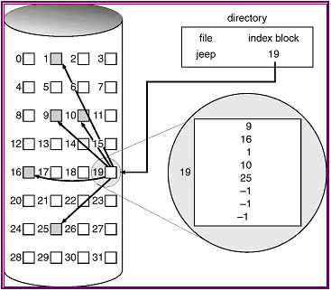
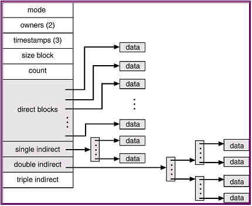

Lecturer: Deepak Gupta
Notes prepared by: Kiran Pandey
Lecture Date: November 8, 2004
Contents
About This Lecture
In this lecture we first examine the indexed allocation method for allocating
disk space We then look at the implementation of the System V file system.
Finally, we begin with the Fast File System.
Indexed allocation:
File systems in UNIX use indexed allocation to allocate disk space. Under this scheme, for each file, an array of disk block addresses of the file is maintained. This array may be placed inside the file's inode or in a separate block called the index block of the file. The problem, however, is deciding upon a suitable size for this array. Any reasonable size will place a severe upper limit on possible file sizes. Again, statistically speaking, most files are very small, so a very large array will mean wastage of space.

Indexed allocation of disk space
A better alternative is as follows:
1. The first few (say 10) entries of the array (which is a part of the inode) are pointers to actual data blocks (i.e. direct blocks). If a file is small enough, it will need no more than the direct blocks. Assuming a block size of 4KB, all files of sizes 40 KB or less will fit within the direct blocks.
2. The last few entries of the array are pointers to indirect blocks. Thus, in this case, the 11th entry would point to a single indirect block which is an array of disk block addresses. Suppose that a disk block address is 4 bytes long, then a 4 KB single indirect block can contain as many as 4KB/4bytes = 1024 disk block addresses. Thus a file can have up to 1024 + 10 = 1034 data blocks, which means that the maximum file size is a little over 4 MB.
3. To make even larger files possible, the next entry of the array (12th in this case) points to a double indirect block. The double indirect block contains the pointers to blocks that contain the pointers to actual data blocks. Now a file can have as many as 220 + 210+ 10 = 1049610 data blocks, or a maximum size of a little over 4 GB.
4. The next entry of the array in the inode points to a triple indirect block. With a triple indirect block, a maximum file size of 4TB is possible as a file may contain as many as 230 + 220 + 210 + 10 blocks.
The number of blocks that can be addressed by 4 byte file pointers is only 232, thus the file pointer size becomes a limiting factor as the maximum file size increases. As a result, many UNIX implementations, including Solaris and IBM's AIX, now support 64 bit file pointers.

The UNIX inode
Under this scheme, as new blocks are allocated only when needed, there is economy of space. On the other hand, multiple disk accesses may be required to read a data block as the block containing its address has to be read first. For a file using double indirect blocks, as many as three disk accesses might be required to read a data block. However, it seems a reasonable overhead in exchange for provisioning for larger files.
Back to the top.System V file system:
This was one of the earliest file systems to be used on UNIX. In this system, the disk is viewed as a sequence of blocks where a block is 512 bytes large.
The first block on the disk contains the boot loader code of the operating system.
The next block is the super block which contains the following information about the disk: 1)number of data blocks on the disk 2) number of inodes on the disk 3) number of free data blocks 4) number of free inodes 5) list of free inodes 6) list of free data blocks. The lists of free inodes and free blocks are too large to fit inside a single block, so the fist few entries of the lists are maintained in the super block along with a pointer to the rest of the list.
Next on the disk is a group of blocks containing the inodes. Given the inode number, an inode can be uniquely located on the disk. Since the number of blocks allotted for storing inodes is fixed, it places a limit on the number of inodes and hence the number of files the file system can have.
The remaining blocks are data blocks which get allocated to files.
This file system suffers from a number of drawbacks:
1. In a new System V file system, the list of free blocks is sorted, so that blocks assigned to a file are contiguous or nearly so. As a result, a new system performs very well. However, over a period of time, as files get created and deleted, the list of free blocks gets scrambled and so, the blocks assigned to a file are randomly distributed with no optimization of seeks. As a result, performance worsens as the system gets older.
2. The inode of a file is very widely separated from its data blocks. Thus accessing a file incurs a very long seek from the inode( which must be read first) to the file's data.
3.In terms of reliability, this system has two major liabilities. The first is the super block which stores all the global information. Again, storing all the inodes close together might mean that if the surface on which they are all stored goes bad, all the data on the disk becomes inaccessible.
4. Finally, the small block size, and hence the low disk bandwidth contributes to bad performance.
Thus to improve performance, the following recommendations are made:
1. For seek optimization, the inode of a file must be kept close to its data blocks which in turn must be as close together as possible, if not contiguous.
2. A larger block size is to be preferred
3. Multiple copies of critical data (the super block) must be maintained.
4. Inodes must be widely distributed.
Back to the top.Fast File System:
The Fast File System (FFS) implemented in 4.2 BSD addresses the above recommendations. Most file systems in use today are based on FFS.
In the Fast File System, 4KB blocks are used, thus increasing the disk bandwidth. On the other hand, to avoid undue internal fragmentation due to large sized blocks, the file system allows the division of a single block into a number of fragments, each of which is addressable. The lower bound on the size of a fragment is the disk sector size( typically 512 bytes).
Thus a 4K/1K FFS has a block size of 4KB and a fragment size of 1 KB. Thus, with respect to disk bandwidth, the system behaves as a system with 4KB block size would. With respect to internal fragmentation, it is as good as a system with 1 KB blocks with an average of .5K( half a fragment) wasted space per file instead of 2K( half a block).
Further details of the Fast File System are examined in the next lecture.
Related links and references:
Silberschatz, Galvin, Gagne: Operating system concepts